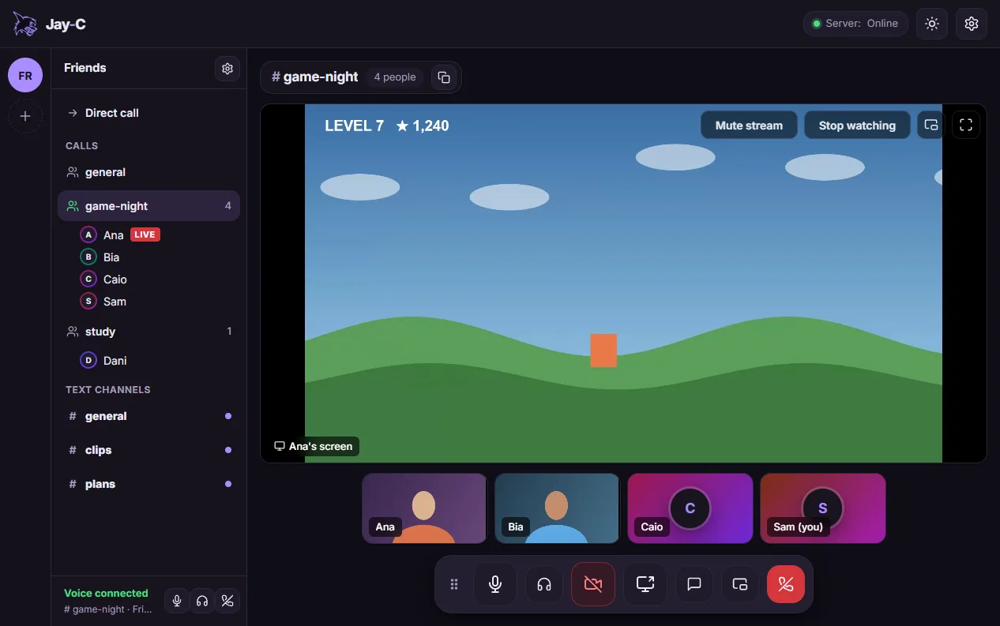

RF003Crítico
Entrar numa sala só com o nome
O participante digita um nome e clica na sala: já está na chamada, sem cadastro.
Aceite: em até 2 segundos o nome aparece para o resto da sala; sem nome, o app nem deixa tentar.
Projeto Integrador · Fundamentos de Engenharia de Software · UEPG
Um app open-source de voz, vídeo e transmissão de tela, sem contas e sem anúncios. Esta página segue o dossiê do trabalho: do problema aos requisitos, à modelagem, à arquitetura e aos testes.
Quem quer fazer chamada, se ver e mostrar a tela com os amigos, a turma ou a equipe quase sempre depende de uma plataforma grande: precisa criar conta, vê anúncio, as conversas ficam no servidor de outra empresa e os recursos melhores (mais qualidade na live, arquivos maiores) são pagos.
O Jay-C inverte isso. O próprio grupo sobe o servidor, num PC ou num servidor alugado, com um único docker compose up -d. Quem tem o endereço entra só com um nome. Senhas por sala, salas ocultas e uma chave de administrador fazem o controle de acesso que, em outros apps, depende de cadastro.
A identidade é o nome que você escolhe ao entrar.
Salas, canais, histórico e arquivos ficam no servidor de vocês.
App e servidor sob a licença MIT, com o código no GitHub.
Não há contas, senhas pessoais nem mensagens privadas fora das salas. Não há criptografia de ponta a ponta: o SFU precisa receber a mídia para repassá-la, então o servidor tem que ser de confiança do grupo. A equipe não hospeda um servidor central, e nesta entrega não há iOS, macOS nem Linux. São cortes conscientes, registrados no dossiê.

O dossiê tem 20 requisitos funcionais, 10 não funcionais e 12 regras de negócio, levantados com entrevistas, um questionário e as versões de teste. Aqui estão os essenciais: sem eles, o Jay-C não seria o Jay-C.
RF003Crítico
O participante digita um nome e clica na sala: já está na chamada, sem cadastro.
Aceite: em até 2 segundos o nome aparece para o resto da sala; sem nome, o app nem deixa tentar.
RF007Crítico
Quem transmite escolhe o monitor inteiro ou a janela de um programa.
Aceite: a sala assiste à live com o som do que está sendo transmitido (no Windows).
RF011Crítico
Mensagens nos canais do servidor ficam guardadas e podem ser lidas depois.
Aceite: a mensagem continua lá depois de fechar e abrir o servidor, e rolar para cima carrega as mais antigas.
RNF001Desempenho
A chamada aguenta até 16 participantes ao mesmo tempo.
Aceite: com 16 participantes, reais ou simulados, todos se ouvem e se veem.
RNF005Privacidade
Fotos (JPEG, PNG, WebP) e vídeos MP4 perdem os dados de GPS e os metadados antes de subir.
Aceite: uma foto com GPS no EXIF chega ao servidor sem ele, conferido num leitor de metadados.
RNF007Confiabilidade
Se a conexão cair, o app tenta voltar sozinho para a sala.
Aceite: com o servidor reiniciado no meio da chamada, o app mostra "reconectando", tenta em 1, 2, 4, 8 e depois a cada 10 s, e volta.
RN003RF002 · RF016
Uma sala oculta não aparece na lista pública e obrigatoriamente tem senha: entra quem sabe o nome e a senha.
RN004RF014 · RF015 · RNF002
Criar, editar ou apagar salas e canais exige a chave de administrador; sem ela, o servidor responde not-admin.
RN009RF010 · RNF003
Um arquivo só abre para quem está na chamada ou na sessão do servidor onde ele foi enviado. Para os outros, é como se não existisse (404).
O ator principal é o Participante. Quem transmite e quem administra são especializações dele: qualquer pessoa na sala pode abrir uma live, e quem tem a chave pode administrar. Não existe conta.
É um sistema cliente-servidor. O app roda no computador ou no celular de cada pessoa; o servidor roda na máquina do grupo. Por ele passam duas coisas bem diferentes: as mensagens de controle (quem entrou, quem saiu, o chat) e a mídia (áudio e vídeo).
Aplicativo Jay-C Windows · Android
ui/Call, sinalização, anexos · core/Servidor do grupo Docker
ws: recebe e repassa as mensagensDATA_DIR, sem bancoA quarta interface (I4) fica dentro do app: a lógica em JavaScript chama funções em Rust pelos comandos do Tauri e recebe eventos delas.
A interface é HTML, CSS e JavaScript puro, mas roda no navegador que já vem no sistema (o WebView2, no Windows) em vez de carregar um navegador inteiro junto. Por isso o instalador tem uns 5 MB. O que o navegador não faz bem fica em Rust: o microfone, a captura do som de um programa e a codificação da tela na placa de vídeo.
A sinalização (porta 3000) e o SFU (porta 40000, UDP e TCP) rodam no mesmo contêiner. Quem hospeda libera duas portas no firewall e pronto; numa rede local ou numa VPN como o Radmin, os apps chegam direto no servidor.
No modelo mesh, cada pessoa manda uma cópia do seu vídeo para cada outra pessoa. Com um SFU (Selective Forwarding Unit), cada um manda o vídeo uma vez só para o servidor, que repassa para quem está assistindo, sem decodificar nada.
O Jay-C começou com mesh e limite de 4 pessoas. Com o SFU o limite subiu para 16 (RNF001). O custo passa para quem hospeda: o servidor reenvia o vídeo para cada espectador, então o upload da máquina do servidor é que precisa aguentar.
As câmeras ainda usam simulcast: cada uma é enviada em três qualidades (≈150, 500 e 1 500 kbps) e o servidor escolhe qual repassar conforme o tamanho do quadrinho na tela de quem assiste.
O que acontece entre clicar numa sala (RF003) e ouvir a outra pessoa.
O app abre um WebSocket na porta 3000 e manda join com o nome da sala, o seu nome e, se a sala tiver cadeado, a senha.
A sala tem menos de 16 pessoas? A senha bate com o hash guardado? Se algo falha, volta um erro com código (room-full, wrong-password) e o app mostra o aviso.
A resposta joined traz quem já está na sala e os codecs que o servidor aceita, que configuram o cliente do mediasoup.
Um de envio e um de recebimento, cada um uma conexão WebRTC com o servidor, ambas na porta 40000. A mídia vai cifrada (DTLS-SRTP).
O app publica o microfone e a câmera (producers) e consome os de cada pessoa (consumers). Quando alguém novo liga a câmera, chega um new-producer e o app passa a consumir também.
O app mostra "reconectando", tenta de novo depois de 1, 2, 4, 8 e então a cada 10 segundos e, quando volta, refaz os transportes sozinho (RNF007). Num teste com o servidor reiniciado, a volta levou cerca de 1 segundo.

No Windows, transmitir a tela inteira (RF007) não passa pelo navegador: o Rust captura, codifica e envia, e o som vai junto.
O Windows deixa capturar o som de um processo específico. Numa live de janela vai só o som daquele programa; na tela inteira dá para excluir apps, e o próprio Jay-C fica de fora, para ninguém ouvir as vozes da chamada de volta.
Quem transmite escolhe resolução, quadros por segundo e se prefere nitidez (texto) ou movimento (jogo). Se a rede de quem assiste não aguenta, a live desce um degrau em vez de travar, e sobe de novo quando sobra banda.
A imagem espera o som: quem transmite segura alguns milissegundos e quem assiste ajusta o próprio buffer, para a boca não mexer antes da voz chegar.
Durante o desenvolvimento apareceu um problema sério: em alguns notebooks, o microfone do navegador colocava o Windows em "modo chamada" e abaixava o som dos outros programas em cerca de 65 dB. Na prática, o jogo ficava mudo enquanto a chamada estava aberta.
A solução foi tirar o microfone do navegador. No Windows, o Jay-C abre o microfone direto pelo WASAPI, passa o som pelo processamento de áudio do WebRTC (cancelamento de eco, redução de ruído) compilado dentro do app e só então entrega a faixa para a chamada.
Em silêncio o microfone usa DTX: manda só uns 5 pacotes por segundo, em vez de 50.
Uma sala pode ter cadeado. Uma sala oculta não aparece na lista e, por regra (RN003), precisa de senha: entra quem sabe o nome e a senha.
Criar, renomear e excluir salas e canais exige a chave do servidor (RN004). Uma sala com gente dentro não pode ser renomeada.
Cada canal guarda as 500 mensagens mais recentes e entrega 50 por vez ao rolar (RF011). Dá para responder uma mensagem; a citação vem do histórico do servidor, então ninguém a forja.
Até 8 MB por imagem e 50 MB por vídeo. O servidor confere o tipo pelos primeiros bytes do arquivo, não pelo nome.


O app cresceu em etapas curtas, cada uma terminando em algo testável: planejar, projetar, implementar, verificar no CI, validar com os testers e entregar uma versão. As partes incertas (o som de um único programa, o vídeo para 16 pessoas) viraram protótipos feitos cedo, para o plano mudar antes de muito código depender delas.
Cada requisito, regra, caso de uso e caso de teste tem um ID. Um caso real: os testers da 0.5.1 pediram para responder mensagens; o pedido virou o RF012 e a RN012, ganhou teste e saiu na versão 0.5.2. Cada versão leva uma tag e segue o versionamento semântico.
A cada envio para o GitHub, o CI roda os testes de JavaScript, os de Rust no Windows e sobe a imagem Docker do servidor para conferir se o /health responde.
Estamos construindo o produto do jeito certo? A suíte automática confere as regras no código: o 17º participante é barrado (RN001), a sala oculta sem senha é recusada (RN003), o arquivo de tipo errado volta 415 e o grande demais, 413.
Estamos construindo o produto certo? Chamadas reais com testers jogando e mostrando a tela. Foi daí que veio o pedido de responder mensagens e onde apareceu o defeito de quem entra numa chamada em andamento.
O som abafado de 65 dB, os quadros-chave que travavam quem assistia e o notebook com duas placas de vídeo só foram entendidos medindo. Cada decisão importante tem a medição registrada no repositório.
Quem entra numa chamada em andamento às vezes não ouve quem já estava lá, sem nenhum aviso. É o primeiro item da lista.
Acompanhar Tauri, WebView2, Android SDK e mediasoup a cada atualização grande do Windows ou do Android.
Alertas por canal: só menções, tudo ou nada, com som próprio, guardados só no aparelho de quem usa.
Dividir a classe Call, que passou de 1 000 linhas, e trocar o if/else do servidor por um mapa de handlers.
Tirar as contas e passar o servidor para o grupo resolveu a dependência das plataformas grandes; o SFU levou a sala a 16 pessoas e a live a 1080p60; e onde o navegador travou, o Rust entrou, sempre depois de um protótipo. A lição que ficou: medir antes de bater o martelo, e ligar requisito, modelo e teste por ID para mudar sem andar às cegas.
Os limites continuam claros: sem criptografia de ponta a ponta, sem iOS, macOS e Linux, e quem hospeda precisa de upload (uma live 1080p60 para 15 pessoas pede uns 90 Mbps do servidor).